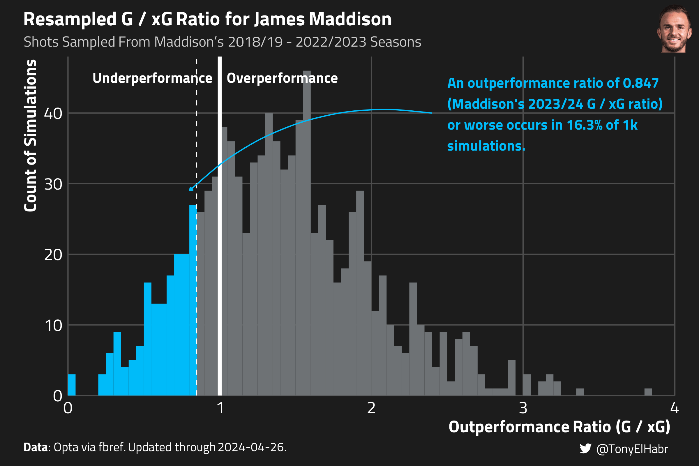
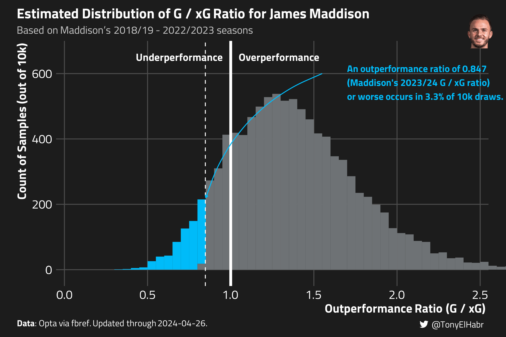

Quantifying how unlikely a player’s season-long shooting performance was
Published
May 4, 2024
Introduction
Towards the end of each soccer season, we naturally start to look back at player performances, often looking to seems to have improved the most compared to their past seasons. Or, on the other end of the spectrum, who disappointed the most. We may have different motivations for doing so–e.g. we may be trying to attribute team over- and under-performance to individuals, we may be hypothesizing who is likely to be transferred or resigned, etc.
The question “How unexpected (or”unlikely”) was player X’s shooting performance this season?” is often posed when observing a large difference in a player’s goals scored and expected goals (xG). For instance, if a striker only scores 9 goals on 12 xG in a given season, their “underperformance” of 3 goals is certainly notable, as its about 25% lower than expected (i.e. (9 - 12) / 12).
The “Outperformance” (\(O_p\)) ratio–the ratio of a player \(p\)’s (non-penalty) goals \(G_p\) to expected goals \(xG_p\)–is perhaps the most common way of evaluating a player’s shooting performance.1
\[
O_p = \frac{G_p}{xG_p}
\]
An \(O_p\) ratio of 1 indicates that a player is scoring as many goals as expected; a ratio greater than 1 indicates underperformance; and a ratio less than 1 indicates overperformance. Our hypothetical player underperformed with \(O_p = \frac{8}{12} = 0.67\).
In most cases, we have prior seasons of data to use when evaluating a player’s \(O_p\) ratio for a given season. For example, let’s say our hypothetical player scored 12 goals on 10 xG (\(O_p = 1.2\)) in the season prior, and 11 goals on 10 xG (\(O_p = 1.1\)) before that. Putting things in perspective, an \(O_p = 0.75\) after those performances seems fairly unlikely, especially compared to an “average” player who theoretically achieves \(O_p = 1\) ratio every year.
So how do we put a number on the unlikeliness of that \(O_p = 0.75\) for our hypothetical player, accounting for their prior season-long performances?
Data
I’ll be using public data from FBref for the 2018/19 - 2023/24 seasons of the the Big 5 European soccer leagues, updated through April 26. Fake data is nice for examples, but ultimately we want to test our methods on real data. Our intuition about the results can be a useful caliber of the sensibility of our results.
Get shot data
raw_shots <- worldfootballR::load_fb_match_shooting(country = COUNTRIES,tier = TIERS,gender = GENDERS,season_end_year = SEASON_END_YEARS)#> → Data last updated 2024-04-25 17:52:47 UTCnp_shots <- raw_shots |>## Drop penalties dplyr::filter(!dplyr::coalesce((Distance =='13'&round(as.double(xG), 2) ==0.79), FALSE) ) |> dplyr::transmute(season_end_year = Season_End_Year,player_id = Player_Href |>dirname() |>basename(),player = Player,match_date = lubridate::ymd(Date),match_id = MatchURL |>dirname() |>basename(),minute = Minute,g =as.integer(Outcome =='Goal'),xg =as.double(xG) ) |>## A handful of scored shots with empty xG dplyr::filter(!is.na(xg)) |> dplyr::arrange(season_end_year, player_id, match_date, minute)## Use the more commonly used name when a player ID is mapped to multiple names## (This "bug" happens because worldfootballR doesn't go back and re-scrape data## when fbref makes a name update.)player_name_mapping <- np_shots |> dplyr::count(player_id, player) |> dplyr::group_by(player_id) |> dplyr::slice_max(n, n =1, with_ties =FALSE) |> dplyr::ungroup() |> dplyr::distinct(player_id, player)player_season_np_shots <- np_shots |> dplyr::summarize(.by =c(player_id, season_end_year), shots = dplyr::n(), dplyr::across(c(g, xg), sum) ) |> dplyr::mutate(o = g / xg ) |> dplyr::left_join( player_name_mapping,by = dplyr::join_by(player_id) ) |> dplyr::relocate(player, .after = player_id) |> dplyr::arrange(player_id, season_end_year)player_season_np_shots#> # A tibble: 15,317 × 7#> player_id player season_end_year shots g xg o#> <chr> <chr> <int> <int> <int> <dbl> <dbl>#> 1 0000acda Marco Benassi 2018 70 5 4.01 1.25 #> 2 0000acda Marco Benassi 2019 59 7 5.61 1.25 #> 3 0000acda Marco Benassi 2020 20 1 1.01 0.990#> 4 0000acda Marco Benassi 2022 10 0 0.99 0 #> 5 0000acda Marco Benassi 2023 19 0 1.35 0 #> 6 000b3da6 Manuel Iturra 2018 2 0 0.41 0 #> 7 00242715 Moussa Niakhate 2018 16 0 1.43 0 #> 8 00242715 Moussa Niakhate 2019 10 1 1.5 0.667#> 9 00242715 Moussa Niakhate 2020 11 1 1.02 0.980#> 10 00242715 Moussa Niakhate 2021 9 2 1.56 1.28 #> # ℹ 15,307 more rows
We’ll focus on two players in particular–James Maddison and Matheus Cunha. Maddison has had a sub-par 2023/2024 season for his own standards, underperforming his xG for the first time in since he started playing in the Premier League in 2018/19. On the other hand, Cunha–who has bounced around teams across the Bundesliga, La Liga, and most recently the Premier League–has overperformed his xG for the first time this season.2
Players to highlight throughout this post
SELECT_PLAYERS <-c('ee38d9c5'='James Maddison','dc62b55d'='Matheus Cunha')select_player_season_np_shots <- player_season_np_shots |> dplyr::filter(player_id %in%names(SELECT_PLAYERS))select_player_season_np_shots#> # A tibble: 12 × 7#> player_id player season_end_year shots g xg o#> <chr> <chr> <int> <int> <int> <dbl> <dbl>#> 1 dc62b55d Matheus Cunha 2019 34 2 4.16 0.481#> 2 dc62b55d Matheus Cunha 2020 51 5 5.34 0.936#> 3 dc62b55d Matheus Cunha 2021 68 5 6.91 0.724#> 4 dc62b55d Matheus Cunha 2022 39 6 6.06 0.990#> 5 dc62b55d Matheus Cunha 2023 38 2 3.44 0.581#> 6 dc62b55d Matheus Cunha 2024 71 10 8.59 1.16 #> 7 ee38d9c5 James Maddison 2019 81 6 5.85 1.03 #> 8 ee38d9c5 James Maddison 2020 74 6 5.36 1.12 #> 9 ee38d9c5 James Maddison 2021 75 8 3.86 2.07 #> 10 ee38d9c5 James Maddison 2022 72 12 7.56 1.59 #> 11 ee38d9c5 James Maddison 2023 83 9 7.12 1.26 #> 12 ee38d9c5 James Maddison 2024 49 4 4.72 0.847
If you have some background in statistics, perhaps the first approach that comes to mind is a \(t\)-test (using shot-weighted averages and standard deviations).3
Approach 0
## The actual t-testapproach0 <- select_player_season_np_shots |> dplyr::filter(season_end_year < TARGET_SEASON_END_YEAR) |> dplyr::summarise(.by =c(player),mean =weighted.mean(o, w = shots),## could also use a function like Hmisc::wtd.var for weighted variancesd =sqrt(sum(shots * (o -weighted.mean(o, w = shots))^2) /sum(shots)) ) |> dplyr::inner_join( wide_player_np_shots |> dplyr::select(player, prior_o, target_o),by = dplyr::join_by(player) ) |> dplyr::mutate(z_score = (target_o - mean) / sd,uu =pnorm(-abs(z_score)),ou =pnorm(abs(z_score)) ) |> dplyr::select(-c(mean, sd)) |> dplyr::arrange(player)
Approach 0 output
approach0 |> dplyr::select(player, prior_o, target_o, uu, ou)#> # A tibble: 2 × 5#> player prior_o target_o uu ou#> <chr> <dbl> <dbl> <dbl> <dbl>#> 1 James Maddison 1.38 0.847 0.0707 0.929#> 2 Matheus Cunha 0.772 1.16 0.0125 0.988
Discussion
In reality, this isn’t giving us a percentage of likelihood of the outcome. Rather, the p-value measures the probability of obtaining an outperformance as extreme as the one observed in 2023/24 (or more extreme) if the null hypothesis is true. The null hypothesis in this case would be that there is no significant difference between the player’s actual outperformance ratio in the 2023/24 “target” season and the distribution of outperformance ratios observed in previous seasons.
The t-test indicates that Cunha’s goals-to-xG ratio this year violates the null hypothesis, suggesting that this season has been significantly remarkable for him. On the other hand, the t-test indicates that there is not sufficient evidence that Maddison’s \(O_p\) this season is significantly worse than his \(O_p\) in prior seasons.
Approach 1: Comparing with Other Players
The next approach I’ll present is not so statistically grounded, but may be how some think about unlikeliness.
Calculate the proportional difference between the pre-target and target season outperformance ratios–\(O_{p,\text{target}'}\) and \(O_{p,\text{target}'}\) respectively–for all players \(P\).
Weight \(\delta O^w_p\) by the player’s \(xG_p\) accumulated in prior seasons.4
\[
\delta O^w_p = \delta O_p * xG_p
\]
Calculate the the unlikelihood of the outcome \(U_p\) as a percentile rank of \(\delta O^w_p\).
To quantify the “underperforming” unlikelihood \(U^-_p\), we sort \(\delta O^w_p\) in ascending order–more negative \(\delta O^w_p\) values correspond to lower percentile \(U^-_p\), which represent more unlikely outcomes where a players underperformed relative to prior seasons. In code, this looks as follows.
So, among the 593 player’s evaluated, Maddison’s 2023/24 \(O_p\) ranks as the 37th most unlikely. In terms of \(U^-_p\), Maddison’s 2023/24 goals-to-xG ratio ranks as a 6th percentile outcome.
For “overperforming” unlikelihood \(U^+_p\), we sort \(\delta O_p\) in descending order.
These results feel fairly reasonable, although the rankings are sensitive to the pool of players with which a given player is compared. If a large majority of players in a given season happened to score more than their xG would imply, then a player scoring at a neutral pace would be penalized by this approach. Of course, such an outcome is unlikely, but speaks to the role that selection bias might have with influencing results with this methodology.
One other thing–we’re implicitly assuming that the distribution of unlikeliness should be uniform across all players in a given season. In other words, we’re assuming that there has to be 1% of players with a 1st percentile underperforming outcome, 17% of players with 17th percentile underperforming outcome, etc. I think this assumption makes sense in the long run, but in any given individual season, there may not be a single player who shots terribly enough to really deserve that “worst of the worst”, 1st percentile outcome.
Approach 2: Resampling from Prior History of Shots
There’s only so much you can do with player-season level data. We need to dive into shot-level data if we want to more robustly understand uncertainty of outcomes.
Here’s a more sophisticated approach to quantifying the unlikeliness of a target season’s \(G / xG\) ratio:
Sample \(N_{p,\text{target}}\) shots (with replacement5) from a player’s past shots \(S_{p,\text{target}'}\). Repeat this for \(R\) resamples.6
To quantify unlikeliness of a given player underperforming in the target season \(U^-_p\), count the number of resamples \(r^-\) in which the outperformance ratio \(\hat{O}_{p,\text{target}'}\) of the sampled shots is less than or equal to the observed \(O_{p,\text{target}}\) in the target season for the player.7 The proportion \(\frac{r^-}{R}\) represents the unlikeness of a given player’s observed \(O_{p,\text{target}}\) in the target season.
uu_approach2 |> dplyr::select(player, prior_o, target_o, uu, ou)#> # A tibble: 2 × 5#> player prior_o target_o uu ou#> <chr> <dbl> <dbl> <dbl> <dbl>#> 1 James Maddison 1.38 0.847 0.163 0.837#> 2 Matheus Cunha 0.772 1.16 0.898 0.103
These results imply that Maddison’s 2023/24 \(G / xG\) ratio of 0.847 (or worse) occurs in 16.3% of simulations (uu), and that Cunha’s 2023/24 \(O\) ratio of 1.16 (or better) occurs in 10.3% of simulations (1 - uu).8 Honestly, these numbers feel fairly reasonable, but perhaps a bit too opinionated.
This approach is fairly simplistic and elegant–we just sample shots from a player’s history and count up the outcomes with respect to a target threshold. The plot below should provide a bit of visual intuition as to what’s going on.

Discussion
So is this good enough? Maybe. There are some caveats I can think of:
We’re implicitly making an assumption that a player’s past shot profile is representative of their future shot profile.
We’re effectively treating each player’s \(G / xG\) ratio as constant and only trying to understand the uncertainty around it.
These things don’t necessarily mean that this methodology is bad–it just has its caveats. On the other hand, one notable advantage of this approach is that it is “non-parametric”–we don’t assume anything about the underlying distribution of a player’s \(O_p\); we simply let the power of resampling shape the distribution of outcomes, which should look different for a striker that only takes shots near the goal and a defender that only launches shots from outside the box.
One way to check on the robustness of this approach is to see what the distribution of underperforming unlikeness \(U^-_p\) looks like across all players \(P\). We should expect a distribution that looks relatively uniform–in other words, about 10% of players should have a 90th percentile unlikely outcomes (i.e. very likely), 10% of players should have a 10th percentile unlikely outcome (i.e. very unlikely), and so on.
Approach 2, but with all players (meeting some baseline criteria)
Haaland’s peculiar season has been noted among fans and the media, and it’s interesting to see that this methodology has put the odds of such an outcome as a 0.4th percentile outcome. Perhaps that’s right, but I honestly think that’s just a little too extreme.
Let’s see if we can improve on things with another approach.
Approach 3: Sampling from an Estimated Distribution
If we assume that \(O_p\) ratios come from a Gamma data-generating process, then we can leverage the properties of a player-level Gamma distribution to assess the unlikelihood of a players \(G / xG\) ratio.
To estimate the underperforming unlikeliness \(U^-_p\):
Estimate a Gamma distribution \(\Gamma_{p,\text{target}'}\) to model a player’s true outperformance ratio \(O_{p}\) across all shots, excluding those in the target season–\(\hat{O}_{p,\text{target}'}\).
Calculate the probability that \(\hat{O}_{p,\text{target}'}\) is less than or equal to the player’s observed \(O_{p,\text{target}}\) in the target season using the Gamma distribution’s cumulative distribution function (CDF).
The same process applies for estimating overperforming unlikeliness \(U^+_p\), except that we’d calculate the probability that \(\hat{O}_{p,\text{target}'}\) is greter than or equal to the player’s observed \(O_{p,\text{target}}\) in the latter step.
uu_approach3 |> dplyr::select(player, prior_o, target_o, uu, ou)#> # A tibble: 2 × 5#> player prior_o target_o uu ou#> <chr> <dbl> <dbl> <dbl> <dbl>#> 1 James Maddison 1.38 0.847 0.0679 0.932 #> 2 Matheus Cunha 0.772 1.16 0.903 0.0965
We see that Maddison’s 2023/24 \(O_{p,\text{target}}\) ratio of 0.847 (or worse) was about 7% unlikely given his prior shot history (uu), and that Cunha’s 2023/24 \(O_{p,\text{target}}\) ratio of 1.16 was a 10th percentile outcome (ou).
To gain some intuition around this approach, we can plot out the Gamma distributed estimate of Maddison’s \(O_p\). The result is a histogram that looks not all that dissimilar to the one from before with resampled shots, just much smoother (since this is a “parametric” approach).

Discussion
As with approach 2, we should check to see what the distribution of underperforming unlikeliness looks like–we should expect to see a somewhat uniform distribution.
The raw difference between goals and xG is another reasonable measure of shooting performance, but it can “hide” shot volume. Is it fair to compare a player who take 100 shots in a year and scores 12 goals on 10 xG with a player who takes 10 shots and scores 3 goals on 1 xG? The raw difference is +2 in both cases, indicating no difference in the shooting performance for the two players. But \(O\) would be 1.2 and 3 respectively, hinting at the former player’s small sample size (since no one can reasonably expect to sustain an \(O\) greater than 1.5 or 2 over many shots).↩︎
If you look at Cunha’s FBref page, it will show partial seasons where he has been transferred and has overperformed either before or after being transferred. But when combining the partial seasons into a whole seasons, he had never managed to have an \(O_p\) greater than 1 until 2023/24.↩︎
The weighting here is to reflect the intuition that players who have taken a lot of shots in the past and have an uncharacteristic season are shown as more unlikely than a player with only one prior season of shots, who happens to have a very different goals-to-expected goals ratio in the latter season.↩︎
One could argue that without replacement is also reasonable. However, some players wouldn’t have enough shots from prior seasons to match their volume of shots in 2023/24.↩︎
(Change nothing about the shot’s xG and goal outcomes.) \(N_p\) should be set equal to the number of shots a player has taken in the target season, i.e. 2023/24 here. \(M\) should be set to some fairly large number, so as to achieve stability in the results.↩︎
Similarly, to estimate the unlikeness of an overperforming season, count up in how many simulations \(r^+\) the outperformance ratio of the resampled shots is greater than \(O_{p,\text{target}}\) and calculate the proportion \(\U^+ = \frac{r^+}{r}\).↩︎
Put more in layman’s terms, we might expect Maddison to have a season-long \(O\) ratio like his 2023/24 ratio in 1 of every 6 seasons. Likewise, Cunha’s 2023/24 outcome is a 1 in 10 season occurrence, given his shot history.↩︎